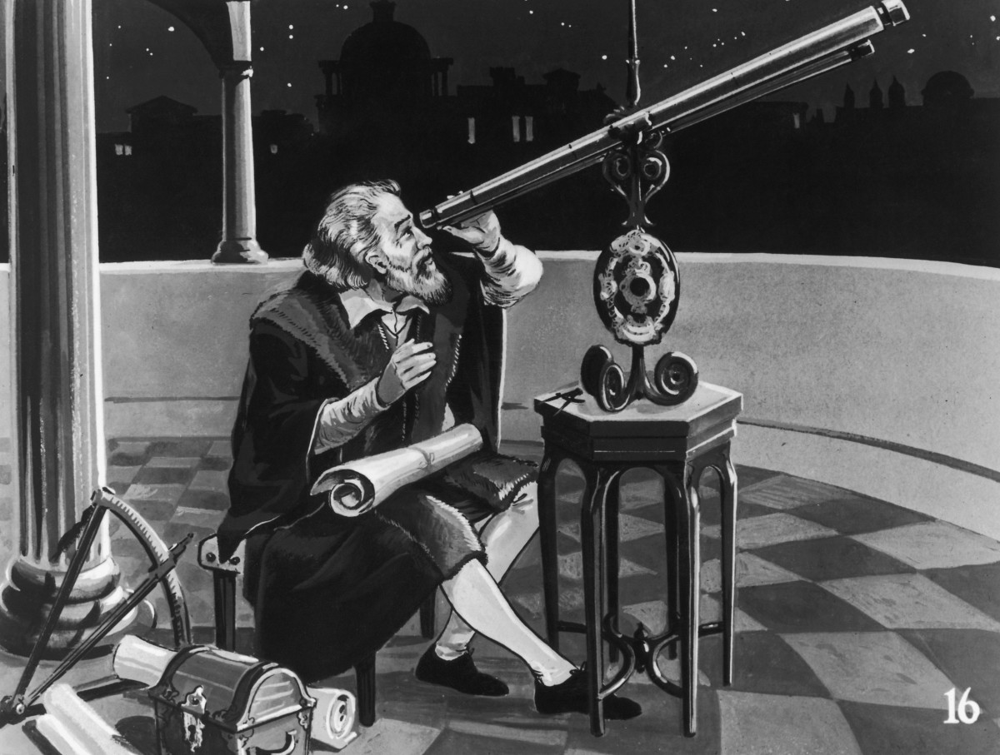

Galileo's discoveries were not welcomed by the church in 17th century Italy, and he spent the last few years of his life under house arrest.
Diesel cars are used near radio observatories, as the spark plugs in petrol powered cars can create radio waves that cover up the ones from space.
the lunar module computer on apollo had just 71k of memory. some calculators can now store more than 500k
some astronauts suffer from temporary hearing problem because the necessory air filters, fans, and pump make it more noisy.
.
one of the mercury's craters is so large that the british isles could fit comfortably into it.
jupiter is shrinking slightly each year because it is being squeezed by its gravity! the energy produced means it produces more heat than it gets from sun!